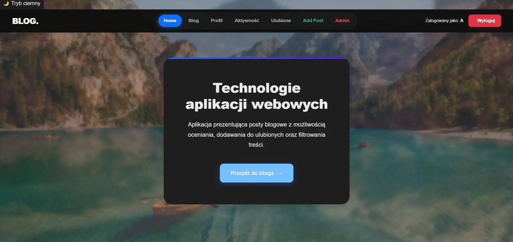
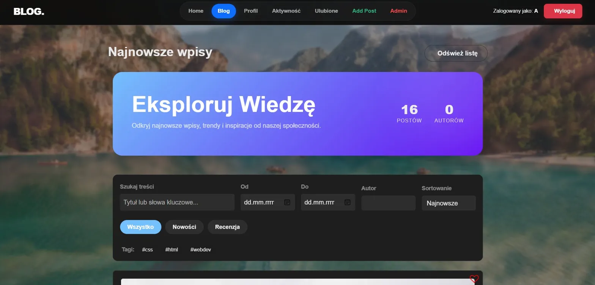
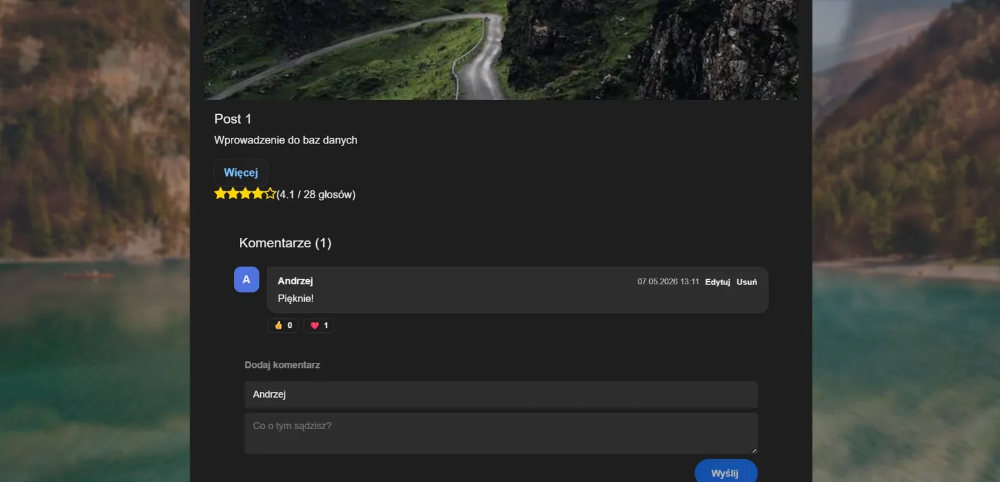
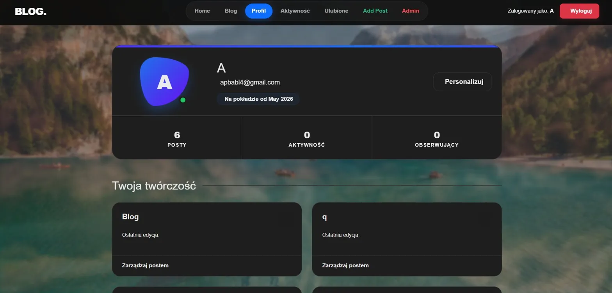
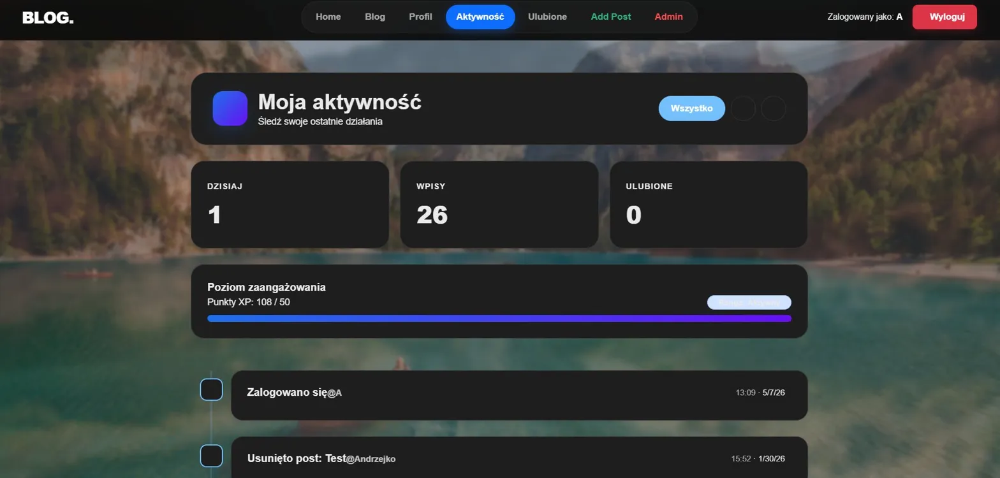
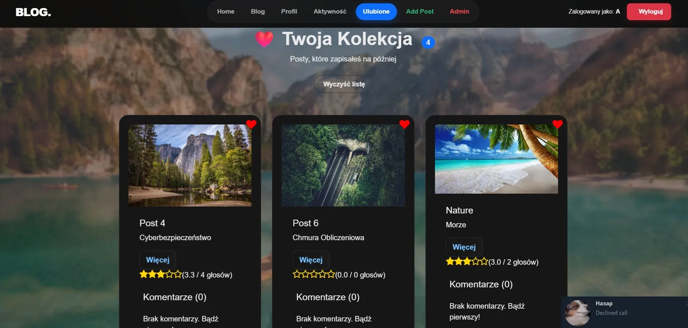
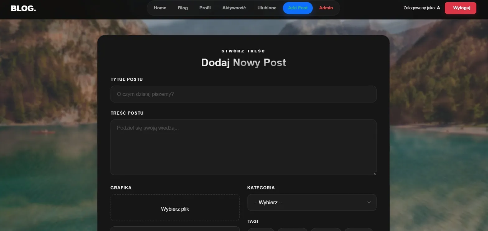
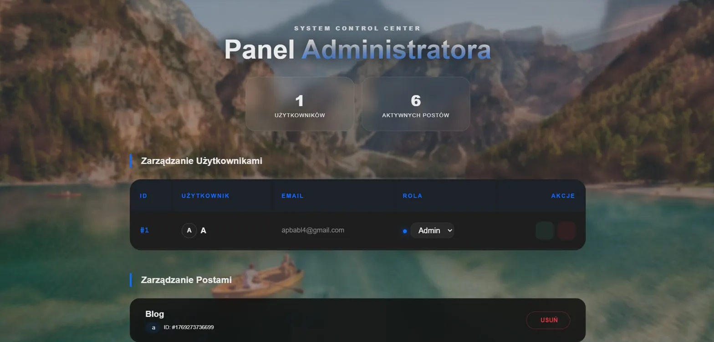

Blog App
Fullstackowa aplikacja blogowa zbudowana w Angular + Node.js — system postów, komentarzy, ocen i ulubionych. Panel admina, autoryzacja JWT i Server-Side Rendering.
Aplikacja w akcji









Fullstack
od loginu po admina
Blog App to kompletna aplikacja webowa zrealizowana w ramach przedmiotu Technologie aplikacji webowych na Akademii Tarnowskiej. Projekt obejmuje cały stos — od komponentów Angular po REST API w Node.js.
Każdy zalogowany użytkownik może pisać posty, komentować, oceniać i zapisywać ulubione wpisy. Administrator zarządza użytkownikami i treścią przez dedykowany panel.
Stack technologiczny
Jak to działa
AuthGuard sprawdza ważność tokena JWT przed wejściem na chronioną trasę. AdminGuard dodatkowo weryfikuje rolę użytkownika z payloadu tokena.
canActivate(): boolean {
const token = this.auth
.getToken();
return this.auth
.isTokenValid(token);
}
RatingService przechowuje wszystkie głosy per post w localStorage. Średnia obliczana dynamicznie — wyświetlana jako gwiazdki z liczbą głosów.
getAverage(postId: string) {
const ratings =
this.data[postId] ?? [];
return ratings.reduce(
(a,b)=>a+b,0)/ratings.length;
}
Multer obsługuje multipart/form-data. Walidacja MIME tylko do obrazów, limit 5MB, sanityzacja nazwy pliku przed zapisem na dysk.
POST /api/upload
// multer({ limits: 5MB })
// fileFilter: image/* only
// → /uploads/[safe_name]
Każda akcja (login, create_post, delete_post) zapisywana z timestampem do activity.json. Użytkownik widzi swój feed akcji w widoku Aktywność.
{
action: "create_post",
userId: 1,
timestamp: new Date(),
meta: { postId, title }
}
Niestandardowy Angular pipe dzieli listę postów na strony. Zastosowany w BlogHomeComponent bez dodatkowych bibliotek.
transform(items: any[],
page: number,
size: number) {
return items.slice(
(page-1)*size, page*size);
}
ThemeService przełącza klasę na body i zapisuje preferencje w localStorage. Zmiany CSS przez custom properties — brak przeładowania strony.
toggle() {
this.isDark = !this.isDark;
document.body.classList
.toggle('dark',this.isDark);
localStorage.setItem(
'theme', this.isDark
? 'dark':'light');
}
Routing
Jak uruchomić
git clone https://github.com/Andrii418/Blog.git cd Blog
npm install
cd backend npm install node server.js # Backend: http://localhost:3101
npm start # lub: ng serve # Frontend: http://localhost:4200